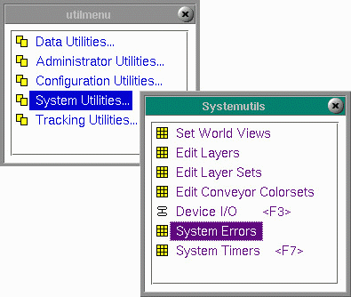

System Utilities
Under System Utilities are other menu options that cover the entire system.
|
The above three deal with selecting user views and establishing layers of parts and I/O devices for viewing.
|  |
Copyright © 2001 Fortna Inc. All rights reserved.